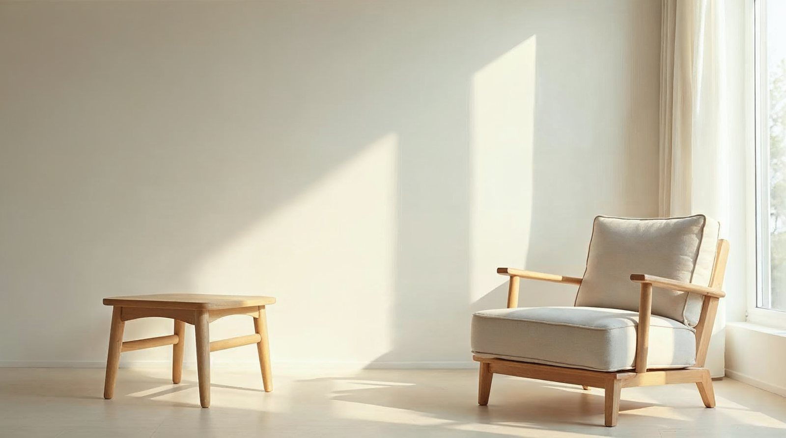
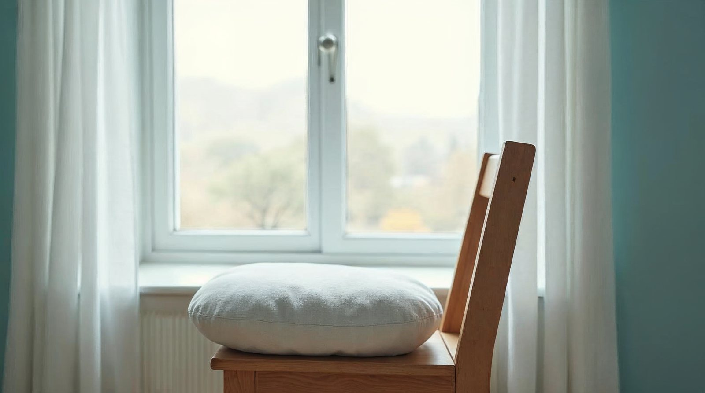
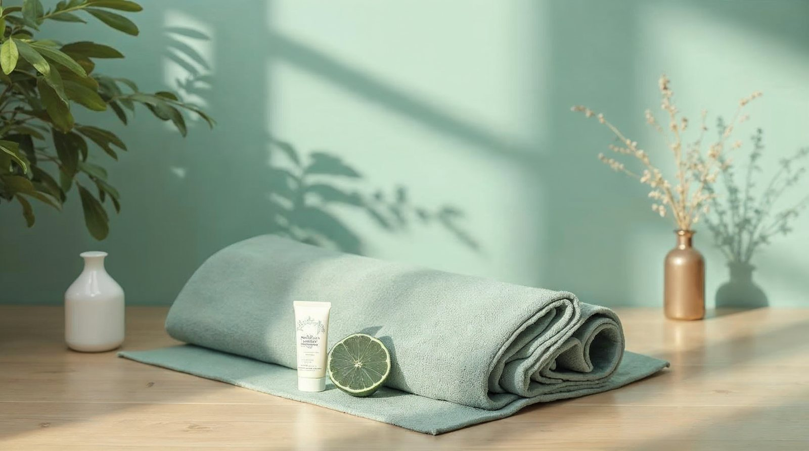
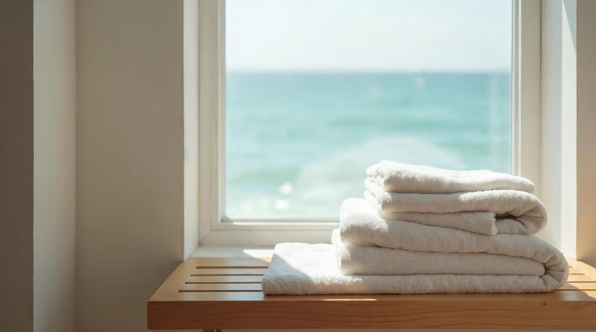
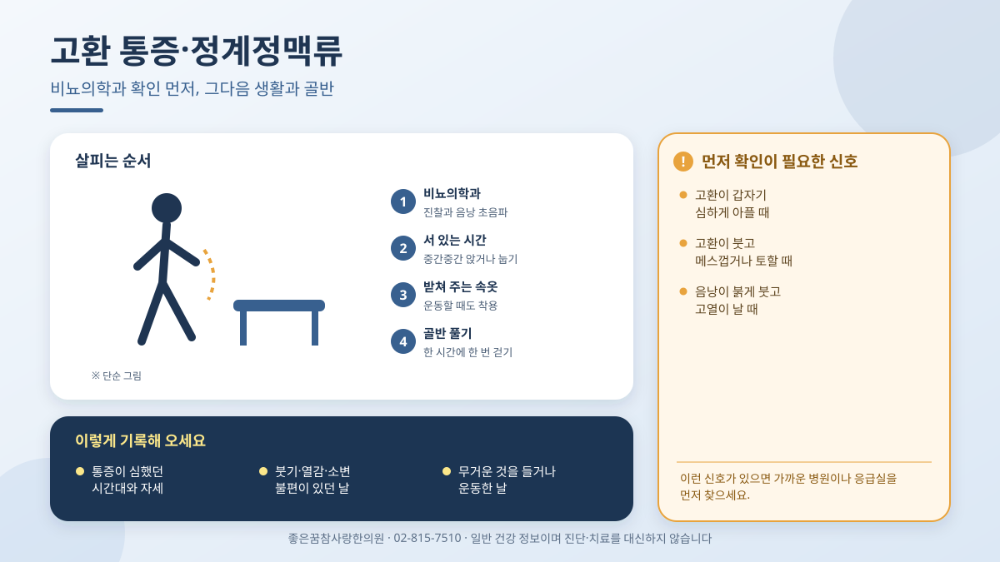

이종호 한의사 감수좋은꿈참사랑한의원 대표원장 (한의사 면허번호 19769)발행 2026-11-26 · 수정 2026-11-27
이 글의 차례
하루 종일 서서 일한 날 저녁, 바지를 갈아입다가 한쪽 고환이 묵직하게 늘어진 느낌이 듭니다. 아침에는 괜찮았는데 저녁만 되면 아랫배와 사타구니까지 당겨요. 말하기 민망해서 몇 달을 그냥 지내다가, 허리 진료를 받으러 오신 김에 조심스럽게 물어보시는 분들이 계세요.
고환과 음낭 쪽 불편은 남성이라면 한 번쯤 겪을 수 있는 일이에요. 그런데 부위가 부위인 만큼 말을 꺼내기 어렵고, 저절로 괜찮아지겠지 하며 미루기 쉽죠. 그러다 걱정이 커져서 잠을 설치시는 분도 계시고요. 민망한 건 당연해요. 저는 그 얘기를 꺼내 주신 것만으로도 고맙게 생각해요.
고환 통증은 원인이 무척 다양해요. 혈관이 늘어나는 정계정맥류, 염증, 탈장, 허리나 골반 쪽 신경과 근육에서 퍼지는 통증까지 여러 가능성이 있거든요. 그리고 그 가운데에는 서둘러 확인해야 하는 경우도 있어요.
그래서 저는 두 단계를 나눠서 말씀드려요. '원인을 확인하는 일'과 '확인된 뒤에 남는 불편을 살피는 일'은 다른 얘기예요. 앞의 건 비뇨의학과가 먼저고, 뒤의 건 제가 함께할 수 있는 부분이에요.
이 글에서는 먼저 비뇨의학과에서 확인할 것들을 말씀드리고, 원인이 확인된 상태에서 생활과 한의원 진료를 어떻게 곁들이면 좋은지를 정리해 볼게요. 말하기 어려운 부위의 얘기인 만큼, 되도록 담담하고 쉬운 말로 하나씩 풀어 보겠습니다.
고환 통증은 어디서 오나요
고환은 음낭 안에 들어 있고, 위쪽으로는 정자가 지나가는 관과 혈관, 신경이 한 묶음으로 이어져 사타구니를 지나 배 안으로 들어갑니다. 이 묶음을 정삭이라고 부릅니다. 고환 통증은 고환 자체에서 올 수도 있고, 이 정삭을 따라 생긴 문제에서 올 수도 있습니다.
통증이 고환 밖에서 퍼져 오는 경우도 있습니다. 허리 아래쪽 신경이 자극되거나, 사타구니 근육이 긴장하거나, 요로에 결석이 있을 때도 고환 쪽이 아프게 느껴질 수 있습니다. 그래서 통증 부위만 보고 원인을 정하기는 어렵습니다.
통증의 모양도 단서가 됩니다. 갑자기 칼로 찌르듯 아픈지, 묵직하게 당기는지, 만지면 아픈지, 오래 서 있으면 심해지는지를 나눠 보면 원인을 좁히는 데 도움이 됩니다.

정계정맥류는 어떤 상태인가요
정계정맥류는 고환에서 나오는 정맥이 늘어나 꼬불꼬불하게 부풀어 있는 상태입니다. 다리의 정맥이 부풀어 오르는 하지정맥류와 비슷하다고 생각하시면 이해가 쉽습니다. 왼쪽에 더 흔하다고 알려져 있습니다.
많은 경우 아무 불편 없이 지내다가 검진이나 난임 검사에서 발견됩니다. 불편이 있다면 오래 서 있거나 운동한 뒤 고환 쪽이 묵직하고 당기는 느낌, 누우면 편해지는 느낌으로 나타나는 경우가 많습니다. 더운 날이나 오래 걸은 날 음낭이 더 늘어지는 느낌이 든다고 말씀하시는 분도 있습니다. 음낭을 만지면 벌레 주머니처럼 울퉁불퉁하게 느껴지기도 합니다.
정계정맥류는 비뇨의학과에서 진찰과 초음파로 확인합니다. 정도가 가볍고 불편이 적다면 지켜보는 경우가 많고, 통증이 이어지거나 고환 크기에 변화가 있거나 난임과 관련이 있다면 시술이나 수술을 상의하기도 합니다.
왜 오래 서 있으면 묵직해질까요?
정맥은 심장으로 피를 돌려보내는 길인데, 고환에서 올라가는 정맥은 길이가 길고 중력을 거슬러 올라가야 합니다. 정맥 안의 판막이 제 역할을 덜 하면 피가 아래로 고이면서 혈관이 늘어나고, 오래 서 있을수록 그 무게가 묵직한 느낌으로 다가옵니다.
누우면 피가 고이지 않고 잘 빠져나가기 때문에 불편이 줄어듭니다. 그래서 정계정맥류로 인한 불편은 아침보다 저녁에, 쉬는 날보다 오래 서서 일한 날에 더 심한 경우가 많습니다.
무거운 것을 자주 들거나, 배에 힘을 주는 일이 많거나, 변비로 오래 힘을 주는 습관도 배 안의 압력을 높여 불편을 키울 수 있습니다. 생활에서 이런 부분을 함께 살피는 이유입니다.
고환 통증과 헷갈리기 쉬운 상태
부고환염은 고환 뒤쪽의 관에 염증이 생긴 상태로, 붓기와 열감, 만지면 아픈 통증이 함께 옵니다. 소변 볼 때 불편하거나 열이 나기도 합니다. 염증이 의심되면 미루지 말고 비뇨의학과에서 확인한 뒤 필요한 치료를 받으셔야 합니다.
서혜부 탈장은 사타구니 쪽으로 장의 일부가 밀려 나오는 상태입니다. 서 있거나 기침할 때 사타구니가 불룩해지고 누우면 들어가는 것이 특징입니다. 음낭까지 내려오면 고환이 부은 것처럼 보이기도 합니다.
음낭수종은 고환 주위에 물이 고여 음낭이 붓는 상태로, 통증은 적고 크기가 커지는 것으로 알아차리는 경우가 많습니다. 이 밖에도 허리 디스크나 골반 근육의 긴장, 만성 전립선염에서 고환 쪽으로 퍼지는 통증이 있습니다.
비뇨의학과에서 먼저 확인할 것
고환 통증이나 음낭의 변화가 있다면 비뇨의학과 진료가 출발점입니다. 진찰과 함께 음낭 초음파로 고환과 혈관, 주변 구조를 살펴보고, 필요하면 소변 검사나 혈액 검사를 함께 합니다.
고환에 단단한 멍울이 만져진다면 통증이 없더라도 미루지 말고 확인을 받으시는 것이 좋습니다. 샤워할 때 고환을 손가락으로 부드럽게 굴려 보며 크기와 단단함을 살피는 습관을 들여 두시면 변화를 일찍 알아차리는 데 도움이 됩니다.
검사에서 큰 이상이 없다는 말을 들었는데도 묵직한 불편이 이어진다면, 그때부터는 허리와 골반, 근육의 긴장, 생활 습관을 함께 살펴보는 단계로 넘어갑니다.

앉아 있는 시간과 골반의 긴장
오래 앉아 일하는 분들 가운데 사타구니와 회음부, 고환 쪽이 뻐근하다고 말씀하시는 분이 많습니다. 딱딱한 의자에 오래 앉아 있으면 골반 바닥 근육이 눌리고 긴장하면서 그 주변으로 불편이 퍼질 수 있습니다.
다리를 꼬고 앉는 습관, 바지를 꽉 끼게 입는 습관, 오래 자전거를 타는 습관도 골반 쪽을 압박합니다. 한 시간에 한 번 일어나 몇 걸음 걷고, 엉덩이와 허벅지 안쪽을 가볍게 풀어 주시면 도움이 됩니다.
긴장과 스트레스가 이어질 때 골반 바닥 근육이 무의식중에 조여 있는 분도 있습니다. 숨을 길게 내쉬며 아랫배와 엉덩이의 힘을 툭 풀어 주는 연습을 하루 몇 번 해 보세요.
고환 통증이 있는 분들이 자주 헷갈리는 것
첫째, 아프지 않으면 괜찮다는 생각입니다. 고환에 생기는 단단한 멍울은 통증 없이 만져지는 경우도 많습니다. 아프지 않더라도 크기나 단단함이 달라졌다면 확인을 받아 보시는 것이 좋습니다.
둘째, 정계정맥류라는 이름만 들어도 큰 병일 거라는 걱정입니다. 정계정맥류는 생각보다 흔하고, 불편 없이 지켜보는 경우가 많습니다. 진단 이름보다 지금 불편이 어느 정도인지, 고환에 변화가 있는지가 더 중요합니다.
셋째, 허리가 아픈 것과 고환이 아픈 것은 따로라는 생각입니다. 허리 아래쪽 신경이나 골반 근육에서 고환 쪽으로 통증이 퍼지는 경우가 있어, 비뇨의학과 검사에서 큰 이상이 없다면 허리와 골반을 함께 살펴볼 필요가 있습니다.

일과 운동은 어떻게 조절하나요
서서 일하는 직업이라 오래 서 있는 것을 피하기 어려운 분이 많습니다. 이럴 때는 쉬는 시간마다 잠깐이라도 앉거나, 다리를 번갈아 받침대에 올려 체중을 옮겨 주시면 도움이 됩니다. 퇴근 뒤에는 잠시 누워 다리와 아랫배를 쉬게 해 주세요.
헬스장에서 무거운 무게를 드는 운동을 즐기는 분이라면, 숨을 참고 배에 힘을 주는 동작을 할 때 묵직함이 심해지는지 살펴보세요. 심해진다면 무게를 조금 낮추고 횟수를 늘리는 쪽으로 바꿔 보시는 것이 좋습니다.
자전거를 오래 타는 분은 안장 높이와 모양을 점검하고, 중간중간 내려서 쉬어 가시길 권합니다. 회음부가 오래 눌리면 골반 쪽 불편이 커질 수 있습니다. 가운데가 파인 안장이나 쿠션이 있는 바지가 도움이 되는 분도 있습니다.
먼저 이렇게 여쭙니다
처음 오시면 대략 이런 순서로 여쭙니다. 미리 생각해 오시면 이야기가 한결 수월해집니다.
- 통증은 갑자기 시작되었나요, 서서히 시작되었나요?
- 아픈 곳은 한쪽인가요, 양쪽인가요? 붓기나 열감이 있나요?
- 오래 서 있거나 앉아 있으면 심해지고 누우면 편해지나요?
- 소변 볼 때 불편하거나 열이 난 적이 있나요?
- 비뇨의학과에서 받은 검사와 진단은 어떠셨나요?
- 허리나 사타구니, 회음부에도 불편이 있나요?
말씀하시기 어려운 부분은 편하신 만큼만 이야기하셔도 괜찮습니다. 비뇨의학과 초음파 결과지나 진단서가 있다면 사진으로라도 가져와 주세요. 하루 일과에서 서 있는 시간과 앉아 있는 시간이 어느 정도인지도 대략 알려 주시면 생활에서 바꿔 볼 것을 정하기 쉬워집니다.

일상에서 먼저 해 볼 수 있는 것
- 오래 서 있는 날에는 중간중간 앉거나 누워 쉬기
- 한 시간에 한 번 일어나 걷고 골반 주변 풀어 주기
- 너무 꽉 끼지 않으면서 받쳐 주는 속옷 입기
- 무거운 것을 들 때 숨을 참지 말고 내쉬면서 들기
- 물과 채소를 챙겨 변비로 오래 힘주지 않기
- 샤워할 때 고환을 부드럽게 만져 보며 변화 살피기
받쳐 주는 속옷은 정계정맥류로 묵직한 느낌이 있는 분들께 도움이 되는 경우가 많습니다. 운동할 때도 받쳐 주는 속옷을 입고, 통증이 심해지는 동작은 잠시 쉬어 가세요.
따뜻한 물에 몸을 담그는 것이 편하다고 느끼시는 분도 있고, 오히려 묵직해진다고 느끼시는 분도 있습니다. 내 몸이 어느 쪽인지 살펴보시고, 불편해지는 쪽은 피하시면 됩니다. 사우나처럼 뜨거운 곳에 오래 머무는 것은 고환 쪽에 부담이 될 수 있어, 임신을 준비하는 분이라면 특히 줄여 보시길 권합니다.
한의원에서 함께 살필 수 있는 경우
- 비뇨의학과 검사 뒤에도 사타구니와 고환 쪽 묵직함이 이어지는 경우
- 오래 앉아 일하며 회음부와 아랫배, 허리가 함께 뻐근한 경우
- 허리와 골반 근육의 긴장이 고환 쪽 불편과 함께 오는 경우
- 아랫배와 손발이 차고 피로가 쌓인 경우
좋은꿈참사랑한의원에서는 진찰을 마친 뒤 허리와 골반, 사타구니 주변 근육의 긴장, 앉는 습관, 냉기와 피로를 함께 보고 지금 상태에 맞는 방향을 정합니다. 침이나 온열 관리, 한약 상담 가운데 무엇이 맞는지는 진찰한 내용을 바탕으로 정합니다.
한약을 상의할 때는 드시는 약을 모두 확인하고 신중하게 정합니다. 비뇨의학과 진료와 정기 검사는 그대로 이어 가시고, 처방받은 약은 상의 없이 멈추지 않으시도록 안내합니다. 원인이 확인되지 않은 통증은 비뇨의학과 진료를 먼저 받으시는 것이 순서입니다.
이렇게 기록해 오시면 상담이 쉬워집니다
- 통증이 시작된 날과 그때의 상황
- 통증이 심했던 시간대와 서 있거나 앉아 있던 시간
- 붓기, 열감, 소변 불편이 있었던 날
- 무거운 것을 들거나 운동을 한 날
- 비뇨의학과 검사 결과와 진단
몇 주만 적어 보셔도 통증이 서 있는 시간, 앉아 있는 시간, 운동과 어떻게 맞물리는지가 보이기 시작합니다. 그 흐름을 알면 일하는 방식이나 운동 강도를 어디서부터 조절할지 정하기가 훨씬 쉬워집니다. 기록은 짧게, 날짜와 한두 단어만 적어도 충분합니다.
말하기 어려운 통증일수록
고환 쪽 통증은 꺼내기 어려운 얘기라 혼자 오래 참는 분이 많아요. 그런데 원인을 일찍 확인할수록 마음도 가벼워지고, 생활에서 바꿔 볼 것도 분명해져요. 부끄러워하실 일이 아니에요.
이 얘기를 꺼내시는 분들은 대개 몇 달, 길게는 몇 해를 망설이다 오세요. 그동안 혹시 큰 병은 아닐까, 아이를 갖는 데 문제가 되지는 않을까 혼자 걱정을 키워 오신 경우가 많거든요. 확인을 받고 나면 그 걱정의 상당 부분을 내려놓으시는 걸 자주 봐요.
확인 뒤에 남는 묵직함과 골반의 긴장은 제가 맡을게요. 대신 하나만 부탁드려요. 오래 서 있거나 앉아 있는 날엔 한 시간에 한 번쯤 자리를 바꿔 몸을 움직여 주세요. 딴 건 지금처럼 하셔도 돼요.
먼저 가까운 비뇨의학과에서 원인을 확인하시고, 그 뒤엔 진료실에서 함께 살필게요. 말 꺼내기 어려운 것도 그냥 편하게 물어보세요.
이런 증상은 먼저 확인이 필요합니다
- 고환이 갑자기 심하게 아프면서 붓고 메스껍거나 토하는 경우
- 음낭이 붉게 붓고 뜨거우며 고열이 함께 나는 경우
이런 신호가 있으면 한의원보다 가까운 병원이나 응급실을 먼저 찾으세요.
함께 읽으면 좋은 글
- 회음부와 아랫배가 뻐근하고 소변 뒤에도 불편한 만성 전립선염(만성 골반통)은 어떻게 살피나요?
- 임신 준비 중 남편 쪽 정액 검사 결과가 걱정될 때(남성 난임)는 무엇을 살피고 준비하나요?
- 사타구니가 시큰하고 양말 신기가 힘든 퇴행성 고관절 통증은 어떻게 살피나요?
- 전립선 비대가 있다는 말을 들었을 때, 비뇨의학과 치료와 함께 생활에서는 무엇을 살피나요?
- 허리가 아파서 왔는데 대변과 소변은 왜 묻나요?

여쭙는 것
- 통증은 갑자기 시작되었나요, 서서히 시작되었나요?
- 아픈 곳은 한쪽인가요, 양쪽인가요? 붓기나 열감이 있나요?
- 오래 서 있거나 앉아 있으면 심해지고 누우면 편해지나요?
생활에서 해 볼 것
- 오래 서 있는 날에는 중간중간 앉거나 누워 쉬기
- 한 시간에 한 번 일어나 걷고 골반 주변 풀어 주기
- 너무 꽉 끼지 않으면서 받쳐 주는 속옷 입기
한의원에서 함께 살필 것
- 비뇨의학과 검사 뒤에도 사타구니와 고환 쪽 묵직함이 이어지는 경우
- 오래 앉아 일하며 회음부와 아랫배, 허리가 함께 뻐근한 경우
- 허리와 골반 근육의 긴장이 고환 쪽 불편과 함께 오는 경우
먼저 확인이 필요한 신호
- 고환이 갑자기 심하게 아프면서 붓고 메스껍거나 토하는 경우
- 음낭이 붉게 붓고 뜨거우며 고열이 함께 나는 경우
한눈에 보는 표
| 구분 | 핵심 |
|---|---|
| 여쭙는 것 | 통증은 갑자기 시작되었나요, 서서히 시작되었나요? 아픈 곳은 한쪽인가요, 양쪽인가요? 붓기나 열감이 있나요? |
| 생활에서 해 볼 것 | 오래 서 있는 날에는 중간중간 앉거나 누워 쉬기 한 시간에 한 번 일어나 걷고 골반 주변 풀어 주기 |
| 한의원에서 함께 살필 것 | 비뇨의학과 검사 뒤에도 사타구니와 고환 쪽 묵직함이 이어지는 경우 오래 앉아 일하며 회음부와 아랫배, 허리가 함께 뻐근한 경우 |
| 먼저 확인이 필요한 신호 | 고환이 갑자기 심하게 아프면서 붓고 메스껍거나 토하는 경우 음낭이 붉게 붓고 뜨거우며 고열이 함께 나는 경우 |
자주 묻는 질문
정계정맥류가 있으면 꼭 수술해야 하나요?
불편이 적고 고환에 변화가 없다면 지켜보는 경우가 많습니다. 통증이 이어지거나 고환 크기 변화, 난임과 관련이 있다면 비뇨의학과에서 시술이나 수술을 상의하게 됩니다.
고환 통증을 한의원에서 먼저 봐도 되나요?
원인이 확인되지 않은 고환 통증은 비뇨의학과 진료를 먼저 받으시길 권합니다. 검사 뒤에도 남는 묵직함과 골반, 허리의 긴장은 한의원에서 함께 살필 수 있습니다.
정계정맥류가 난임과 관련이 있나요?
정계정맥류가 정자 상태에 영향을 줄 수 있다고 알려져 있습니다. 임신을 준비하고 계신다면 비뇨의학과에서 정액 검사와 함께 상의해 보세요.
운동을 해도 괜찮을까요?
걷기처럼 가벼운 운동은 대개 괜찮습니다. 무거운 것을 드는 운동이나 오래 서 있는 운동 뒤 묵직함이 심해진다면 강도를 조절하고, 받쳐 주는 속옷을 입어 보세요.
좋은꿈참사랑한의원은 재진 때 지난번 이야기부터 이어서 여쭙니다. 진료시간과 예약은 오시는 길에서 확인하세요.
어디서 상담받을 수 있나요?
좋은꿈참사랑한의원은 서울 동작구 만양로2길 2 신성빌딩 3층·5층(서울 동작구 상도동, 7호선 상도역 3번 출구 근처)에 있습니다. 한의사 3명(이종호 대표원장, 조영기 수석진료원장, 정원영 진료원장)이 진료합니다. 진료시간은 평일 09:30~20:00(점심 13:00~14:00), 토·일·공휴일 09:30~15:00이며, 방문 전 전화로 확인을 권합니다. 예약은 네이버 예약, 카카오톡 상담, 전화 02-815-7510로 받습니다.
이 글은 일반적인 건강 정보이며 개인의 진단이나 치료를 대신하지 않습니다. 증상이 있거나 복용 중인 약이 있다면 진료를 통해 확인하세요. 치료 효과는 개인마다 다를 수 있습니다.
작성 기준: 일반적으로 알려져 있는 건강 정보를 참고해 정리했습니다(대표원장 감수). 증상 기록은 1~2주 동안 하루 1회, 비슷한 시간에 적어 오시면 지난 상태와 비교하기 쉽습니다.